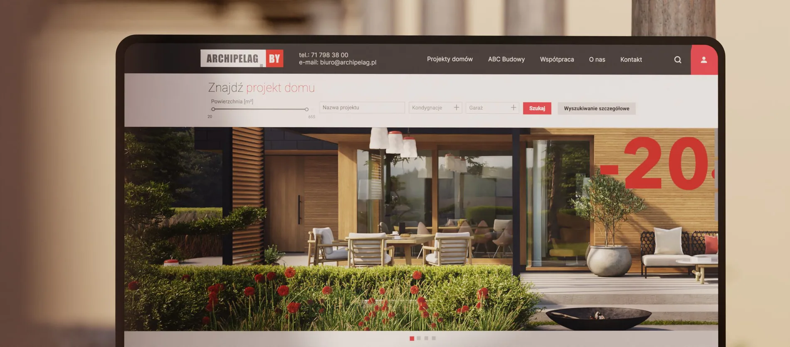
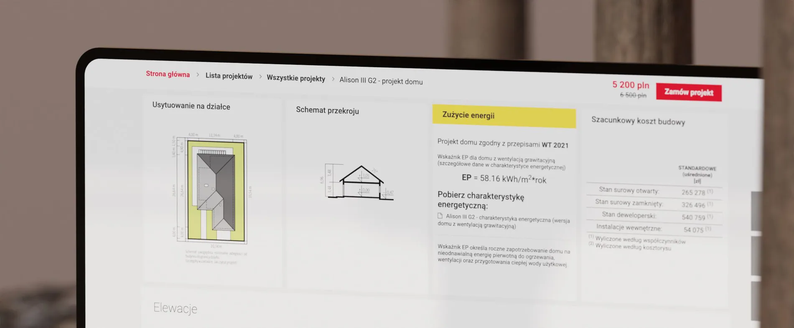
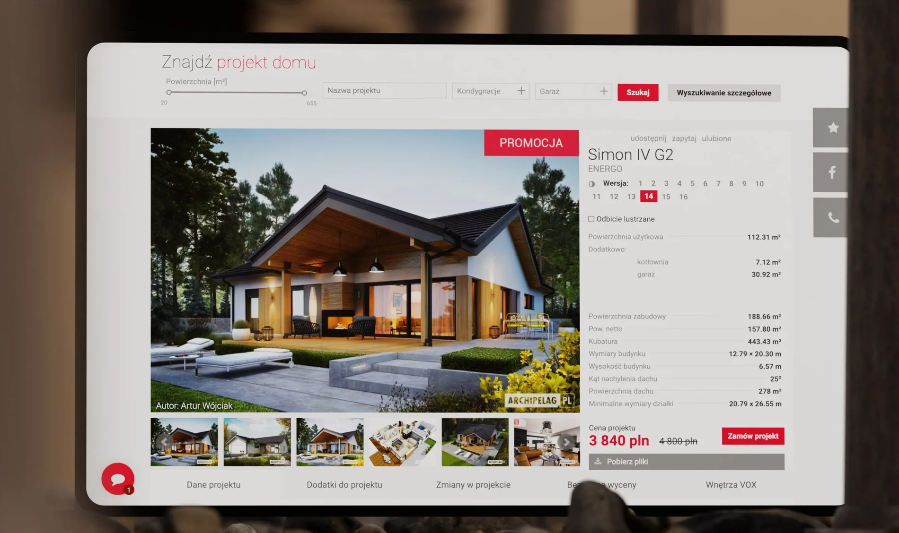

Archipelag
Architecture meets digital experience.
SCROLL TO EXPLORE
Finding the right home starts with finding the right experience.
Helping users discover ready-made home designs and architectural services through a clear, research-led web experience.
- Project
- Archipelag
- Role / disciplines
- Website / Product design
- Period
- 2022
From discovery to a clearer route to purchase.
We developed a roadmap and built communication with the client for successful work on the project.

I conducted user interviews and card sorting exercises to identify key user segments and perform a market scan. We defined primary user scenarios and held a series of meetings with the team and the Business Analyst (BA) to refine our approach. I developed the main user flow, designed a UI kit aligned with the company's corporate identity, and created page mockups for user testing. As a result, we launched a website that received positive feedback from both users and the client. The well-structured information architecture and effective filtering options improved project discovery and access to information, significantly reducing the workload on the office and call center.
The client tasked us with developing a website to showcase and sell private house projects, as well as services related to house design, interior design, landscape design, and installation work. I identified user needs, business objectives, and key goals for the site. Collaborating closely with the client, we defined the primary directions and established the foundational grouping of menu items.
